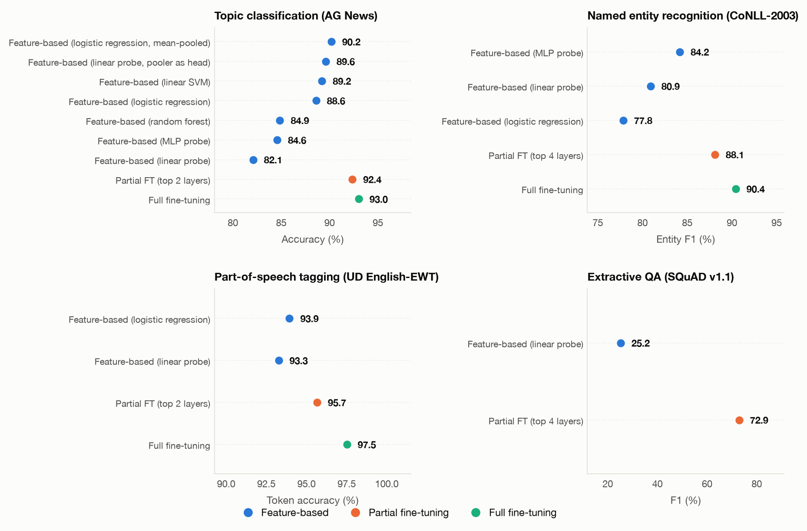
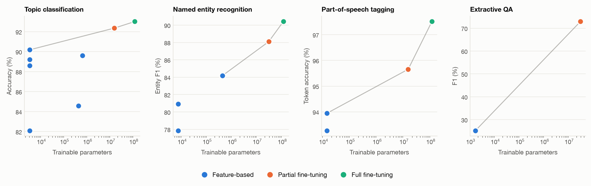
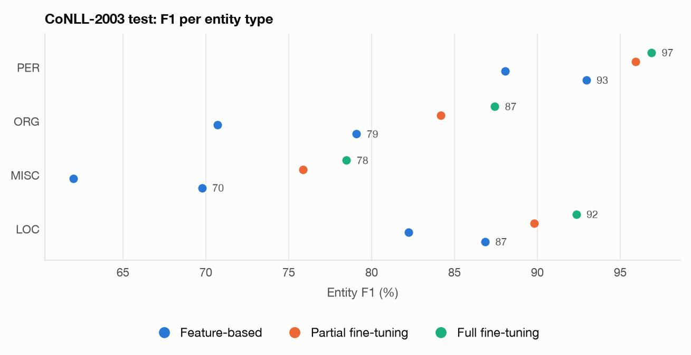
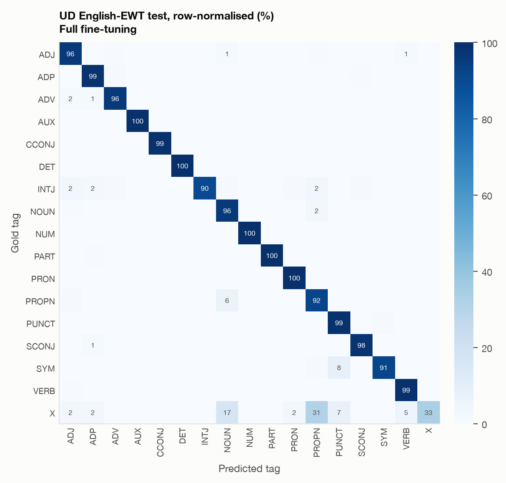
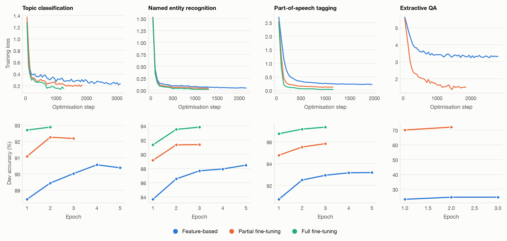

bert-base-uncased body, four classical NLP tasks, and
three rungs of the adaptation ladder. For every task the delivered model is the one the measurements
chose, reported next to the alternatives we trained and rejected.Team: {{TEAM}}
Professor: Dexter Gomez · Course: Trends in Data Science · Date: September 2026
Repository: {{REPO_URL}}
Deliverables: this report, the code that produced every number in it
(scripts/run_experiments.py reruns the whole grid), and four published models with model cards.
Environment: {{VAL_env}} · {{VAL_total_runs}} runs · {{VAL_total_minutes}} minutes of training.
Each of these four models was selected against alternatives trained by us on the same data with the same seed, and every rejected alternative is reported with its numbers in section 6. The short version of what the measurements say:
The gap between a frozen BERT and a fine-tuned one is not a property of BERT — it is a property of the task. It is {{VAL_pos_gap}} points on part-of-speech tagging, where the information the head needs is already sitting in the pretrained representation, and {{VAL_qa_gap}} points on extractive QA, where it is not. Choosing the rung of the ladder without measuring is choosing blind.
All four tasks share one body, bert-base-uncased (110 M parameters, 12 encoder layers, hidden
size 768). Only the head changes: a sequence classifier over [CLS] for topic classification, a
per-token classifier for NER and POS, and a two-logit span head (start, end) for extractive QA.
AG News ships no development split, so we carved one out of the training pool with the fixed seed: 20 000 rows for training, 5 000 held out to watch the epochs, and the official 7 600-row test set kept untouched for the numbers in this report. SQuAD is subsampled to 15 000 training examples as the assignment specifies; its test split is not public, so — as is standard for SQuAD v1.1 — the 10 570-question development set is the held-out evaluation set, and a fixed 3 000-question subsample of it is used for the cheaper per-epoch monitoring.
The tokenizer splits words into pieces (playing → play + ##ing) but the
datasets carry one label per whole word. We follow the standard convention: the label goes on the first subword
of each word, and every other position — continuation subwords, [CLS], [SEP],
padding — gets -100, the index CrossEntropyLoss ignores. The same first-subword position
is used when extracting frozen features, so features and labels stay aligned by construction rather than by luck.
This is the failure mode that does not announce itself: a misalignment either crashes on mismatched lengths or,
far worse, trains quietly against shifted labels and produces a healthy-looking loss curve. So before any training
ran, scripts/sanity_check.py printed tokens next to their labels and checked the invariants. Its
output is committed as docs/sanity_check.txt; an extract:
=== ner: subword/label alignment (bert-base-uncased) ===
subword word_id label tag
[CLS] None -100 (ignored)
eu 0 3 B-ORG
rejects 1 0 O
german 2 7 B-MISC
...
peter 0 1 B-PER
blackburn 1 2 I-PER
invariant check: {"checked": 500, "length_mismatches": 0,
"truncated_sentences": 0, "unexplained_label_loss": 0, "passed": true}
The machine check runs over 500 training sentences per token task and asserts that the label array is exactly as long as the input ids and that the number of labelled positions equals the number of words, unless the sentence was genuinely truncated at the maximum length. The same script decodes SQuAD's character-level answer spans back out of the subword start/end indices it produced and compares them to the gold strings, which is the equivalent check for QA: the gold answer is a character offset in the context, and it has to survive being converted into token indices inside an overlapping window that may not even contain it.
lhoestq/conll2003 ships its NER tags as plain integers with no label names attached, so the
canonical CoNLL-2003 tag order is pinned in src/data.py and verified at load time against the shared
task's own example sentence (EU rejects German call to boycott British lamb ., with EU =
B-ORG). A silent change in that mapping would be indistinguishable from a bad model.
Everything was trained locally on {{VAL_env}} — Apple silicon, not a datacentre GPU. Two consequences shaped
the design. Mixed precision through bfloat16 autocast roughly doubles throughput on this device and
is enabled for every run. And MPS has no fused attention kernel that supports dropout, so the models are loaded
with the eager attention implementation; on CUDA the same code keeps the fast path. Device selection is automatic
(src/common.get_device), so the identical modules run on Colab or Kaggle through the notebook in
notebooks/.
We wrote these down before running the grid, from the structure of each task and from section 5.3 of the BERT paper, where feature-based adaptation on CoNLL NER comes within about 0.3 F1 of full fine-tuning when the features are a concatenation of the top four layers — a detail worth holding onto, because we use the last layer alone.
| # | Hypothesis | Reasoning | Verdict |
|---|---|---|---|
| H1 · Topic | Feature-based adaptation gets within a few points of fine-tuning. | Topic is a document-level, largely lexical decision; a pooled sentence vector should already separate Sports from Business without reshaping the encoder. | Holds {{VAL_agnews_frozen}} vs {{VAL_agnews_full}}: {{VAL_agnews_gap}} points, for zero updated encoder parameters. |
| H2 · NER | Fine-tuning is required; the frozen gap is large. | Entity boundaries are a contextual, structured decision, and the BIO scheme means a half-recovered span scores zero. A linear read-out of the last layer has no way to reshape the representation for it. | Holds {{VAL_ner_frozen}} vs {{VAL_ner_full}} entity F1: {{VAL_ner_gap}} points, far outside the seed band. |
| H3 · POS | Frozen features are strong; partial fine-tuning closes most of what is left. | Probing work consistently finds part-of-speech information in the lower and middle layers of BERT. The pretraining objective essentially has to encode it. | Half right Frozen features are strong as predicted ({{VAL_pos_frozen}}%), but partial fine-tuning closed only half the accuracy gap and almost none of the macro-F1 gap. See 6.3. |
| H4 · QA | Feature-based adaptation fails outright. | A span head has to make the question interrogate the context. That cross-attention behaviour is not in a frozen masked-language-model representation; no linear layer on top can invent it. | Holds {{VAL_qa_frozen}} vs {{VAL_qa_partial}} F1: {{VAL_qa_gap}} points, the widest gap in the assignment. See 6.4 for what the frozen model actually answers. |
| H5 · Pooling | For frozen sequence classification, mean pooling beats [CLS]. |
[CLS] was pretrained for next-sentence prediction, not as a general sentence embedding; without
fine-tuning there is nothing that makes it a good summary. | Holds Mean pooling {{VAL_agnews_frozen}} vs {{VAL_agnews_sk_cls}} for [CLS], same classifier. The pooler result in 6.1 is the same effect, larger. |
The three rungs are implemented by one function, src/common.apply_adaptation, which decides which
parameters carry gradients. Everything outside the encoder body is head and always trains.
| Rung | What trains | Trainable | How it is done here |
|---|---|---|---|
| Feature-based | Only the consumer of the frozen representation | 0 BERT params | Two variants. (a) The last hidden states are extracted once, cached to disk, and consumed by a
scikit-learn estimator (logistic regression, linear SVM, random forest). (b) A linear or MLP probe
trained with PyTorch on top of the frozen body — identical in spirit, but the result is a normal
transformers checkpoint that can be published to the Hub. |
| Partial fine-tuning | Head + top N encoder layers | ≈14 M (N=2), ≈28 M (N=4) | The body is frozen, then the top N layers are unfrozen again. The lower layers — which probing work says carry the general lexical and syntactic machinery — are left exactly as pretraining left them. |
| Full fine-tuning | Everything | ≈110 M | Every parameter carries a gradient, at the encoder learning rate. |
A freshly initialised head and a pretrained encoder want opposite step sizes: the head has no information and
needs ≈1e-3 to learn anything in a few epochs, while encoder weights are the product of a long pretraining run and
2e-5–3e-5 is already enough to damage them. Every run that trains head and body together therefore uses
two parameter groups (src/train.TwoGroupTrainer), with a linear schedule and 10% warmup on
both, and weight decay switched off for biases and LayerNorm — the standard exception, because shrinking a
normalisation gain toward zero is not regularisation, it is damage. A single shared rate would have crippled every
partial and full fine-tuning run, and a crippled run inside a comparison is worse than no run at all.
The feature-based rung deserves one more note. When the body is frozen it is also pinned in eval mode, so its dropout never fires and it behaves as a deterministic feature extractor — otherwise the PyTorch probe and the scikit-learn estimator would be consuming different representations of the same sentence, and the comparison between them would mean nothing.
Each task is scored with the metric that penalises the mistakes that matter for it, plus a second metric that catches the specific way that task's models fail quietly.
| Task | Primary metric | Why this one | Secondary |
|---|---|---|---|
| Topic classification | Accuracy | AG News is exactly balanced (1 900 test items per class), so accuracy is not misleading here and is the number the literature reports for this dataset. | Macro-F1 — identical to accuracy on a balanced set unless a class has collapsed, which is precisely the failure it is there to expose. A per-class report and a confusion matrix are stored with every run. |
| NER | Entity-level micro F1 (seqeval) | The unit of correctness is the whole span with its type: predicting B-PER I-PER as
B-PER O is a wrong answer, not a 50% correct one. This is the official CoNLL-2003 measure, so our
numbers sit on the same scale as the published ones. |
Token accuracy, kept deliberately: roughly 83% of CoNLL tokens are O, so a model that
predicts nothing at all scores in the eighties. The distance between the two numbers is the point. |
| POS | Token accuracy | Every token gets exactly one tag, the tags are dense rather than sparse, and there is no span structure to respect — so the per-token decision is the unit of correctness. It is also the standard UD measure. | Macro-F1 over the 17 UPOS tags: accuracy is dominated by NOUN, PUNCT,
VERB and DET, and hides whether the rare tags (INTJ, SYM,
X) are learned at all. A full 17×17 confusion matrix is stored per run. |
| Extractive QA | F1 (token overlap, SQuAD official normalisation) | Answers are free-form spans, and a prediction that returns the 1929 stock market crash for a gold 1929 is largely right. F1 credits partial overlap; both are computed with the official normalisation (lowercase, strip articles and punctuation) and take the maximum over the gold answers. | Exact match — the strict complement. A large EM/F1 spread means the model finds the right region but not the right boundaries, which is a different disease from finding the wrong region. |
Where the numbers come from. Every score in this report is computed on a held-out test split that was never used for training or for choosing between methods: the official AG News, CoNLL-2003 and UD English-EWT test splits, and the SQuAD v1.1 development set. The per-epoch curves in section 7 use the development splits.
Training diagnostics. Every run records its full Trainer log history (training loss every
50 steps, development metrics every epoch), wall-clock seconds per epoch and per step, total training time, test
evaluation time, trainable and total parameter counts, and the resolved hyper-parameters — all serialised to
results/<task>/<run_id>.json. The figures and tables in this report are generated from
those files, so the prose cannot drift away from the numbers.
The comparison the assignment asks for — tasks against methods, best run of each rung, primary metric:
{{TABLE_MATRIX}}

This is the task where the feature-based rung defends itself. A logistic regression on frozen, mean-pooled last hidden states reaches {{VAL_agnews_frozen}}% accuracy — {{VAL_agnews_gap}} points below full fine-tuning, for zero updated BERT parameters and {{VAL_agnews_frozen_min}} minutes including feature extraction. H1 holds. Topic is a document-level, largely lexical decision, and a pooled sentence vector already separates Sports from Business; what fine-tuning adds is mostly the Business / Sci-Tech boundary, which is where the confusion matrices of all our models concentrate their errors.
Two comparisons inside the frozen rung are worth more than the headline number.
Which vector you pool matters more than which classifier you use. Mean pooling beats
[CLS] by 1.6 points with the same logistic regression, while swapping logistic regression for a
linear SVM on the same [CLS] features moves 0.6 points and a random forest loses 3.7.
H5 holds, and the reason is architectural: [CLS] was pretrained to carry a next-sentence
prediction decision, not to be a sentence embedding. Nothing in the pretraining objective makes it a good
summary of the text until fine-tuning teaches it to be one. The random forest result is the expected one —
axis-aligned splits are a poor fit for a dense 768-dimensional space where the signal is spread across
directions rather than concentrated in individual coordinates.
The pooler is a bottleneck, and it is worth 6.5 points.
Our PyTorch linear probe scored {{VAL_agnews_probe_linear}}% while a logistic regression
on the same frozen model scored {{VAL_agnews_sk_cls}}%. Both are linear models on a frozen BERT, so the gap
should have been noise. It is not, and the cause is that
BertForSequenceClassification does not classify the raw [CLS] state: it classifies
tanh(dense([CLS])), BERT's pooler, a projection pretrained for next-sentence prediction.
Frozen, that tanh-saturated NSP vector is what the probe has to work with. Giving the head more capacity
barely helps — an MLP probe on the same frozen pooler reaches only {{VAL_agnews_probe_mlp}}% — but letting the
pooler count as head instead of as frozen body recovers the gap at
{{VAL_agnews_probe_pooler}}%, with still zero encoder parameters updated. The lesson generalises: frozen
is not a single thing, and where you draw the line between body and head changes the answer more than the
choice of classifier does.
Delivered: {{VAL_agnews_best_method}}, at {{VAL_agnews_best}}% accuracy. Partial fine-tuning of the top two layers reaches {{VAL_agnews_partial}}% with 14.2 M trainable parameters against full fine-tuning's 110 M — {{VAL_agnews_full}}% for eight times the trainable weights. That difference sits inside the ±1–3 point seed band the assignment warns about, so we do not claim full fine-tuning is better here; we claim the two are indistinguishable at this sample size and that partial fine-tuning is the better engineering choice. We publish the full fine-tuned model only because it is marginally ahead on the measurement we actually have, and we say plainly in its model card that the partial variant is within noise at a fraction of the cost.
H2 holds, and the metric choice is what makes it visible. The frozen probe reaches
{{VAL_ner_frozen}} entity F1 against {{VAL_ner_full}} for full fine-tuning — a gap of
{{VAL_ner_gap}} points, far outside seed noise. Token accuracy tells a completely different and much more
flattering story: the same frozen probe is already above 97% there, because 82.5% of CoNLL test tokens are
O and a model that finds nothing at all still scores in the eighties. Entity-level F1 is the
honest measure, because the unit of correctness is the whole span with its type; recovering
B-PER but missing the I-PER that follows it is a wrong answer, not a half-right one.
Unlike topic classification, this task genuinely needs the encoder reshaped. Deciding that Washington is a person here and a location there is a contextual, structured judgement, and a linear read-out of the last layer has no mechanism to make it. Head capacity helps a little — the MLP probe gains {{VAL_ner_probe_gain}} points over logistic regression on the same frozen features — but it plateaus well below anything that touches the encoder, which is exactly the signature of a representation that lacks the information rather than a head that lacks the power to extract it.
Our frozen number is well below the roughly 0.3 F1 gap the BERT paper reports for feature-based adaptation on this dataset, and the difference is not a contradiction: section 5.3 of the paper concatenates the top four hidden layers as features, while we use the last layer alone. That is a deliberate scope decision — the assignment's ladder is about what trains, not about feature engineering on top of a frozen body — but it does mean our feature-based rung is a floor for the method rather than its ceiling.

MISC is the weakest class for every method, which is
expected: it is a residual category holding nationalities, events and adjectival forms with far less internal
consistency than PER, ORG or LOC.Delivered: {{VAL_ner_best_method}}, at {{VAL_ner_best}} entity F1. Here the extra cost of fine-tuning buys something that clearly exceeds the noise band, so the top of the ladder is the right answer and the rejected alternatives make the case for it.
H3 is half right, and the half that is wrong is the interesting one. The first claim holds comfortably: a logistic regression on frozen first-subword states reaches {{VAL_pos_frozen}}% token accuracy. Part-of-speech information really is sitting in the pretrained representation, waiting to be read off by a linear model — which is what the layer-wise probing literature predicts, and what a masked-language-model objective essentially has to encode in order to predict a masked token at all.
The second claim — that partial fine-tuning would close most of the remaining gap — does not survive contact with the numbers. Unfreezing the top two layers reaches {{VAL_pos_partial}}%, roughly half of the {{VAL_pos_gap}}-point distance to full fine-tuning's {{VAL_pos_full}}%. And on macro-F1 it closes almost nothing at all: {{VAL_pos_sk_macro}} → {{VAL_pos_partial_macro}}, against {{VAL_pos_full_macro}} for full fine-tuning. Two metrics that agree about the frozen rung disagree sharply about the middle one, which is the whole reason for reporting both.
Partial fine-tuning made the rarest tag worse than leaving BERT frozen.
On X — 42 test tokens, the residual category for material that fits no other
tag — F1 goes 19.8 frozen (logistic regression), 8.2 for the frozen probe, 4.2 for partial fine-tuning,
and 45.2 for full fine-tuning. The same run whose headline accuracy improved by 1.7 points gave up almost
everything it had on the rarest class. With only the top two layers free and a head learning rate of 1e-3, the
cheapest way to reduce loss is to sharpen the frequent tags; the gradient from 42 tokens cannot compete, and
the representation that would have distinguished them is frozen below. Full fine-tuning can move the lower
layers and the embeddings, and it is the only configuration that recovers the class. Accuracy alone would have
reported this as an unambiguous improvement.

PROPN is read as
NOUN, 8% of SYM as PUNCT — both genuinely ambiguous in web text — and
X scatters, 31% of it into PROPN and 17% into NOUN, which is what a
residual category with 42 test tokens looks like when it is barely learned.Delivered: {{VAL_pos_best_method}}, at {{VAL_pos_best}}% token accuracy and {{VAL_pos_full_macro}} macro-F1. This is the one task where we would have been tempted to ship the cheap option on the headline metric — {{VAL_pos_frozen}}% for zero updated encoder parameters is a genuinely good tagger — and the secondary metric is what argues against it. If the rare tags matter, and in a tagger feeding a parser they do, the 110 M-parameter model is worth its cost here.
H4 holds, and by the widest margin in the assignment. A span head on a frozen body reaches {{VAL_qa_frozen}} F1; unfreezing the top four encoder layers reaches {{VAL_qa_partial}}. That is {{VAL_qa_gap}} points — an order of magnitude larger than the gap on part-of-speech tagging, on the same body, with the same head learning rate, in the same framework. Whatever "feature-based adaptation" means, it does not mean the same thing from one task to the next.
The reason is visible in the predictions rather than in the score. A frozen BERT plus a linear span head produces answers of the right kind and the wrong identity:
{{TABLE_QA_EXAMPLES}}Asked which team represented the AFC, the frozen model answers Carolina Panthers — a team name, from the right sentence, and the wrong one, because the NFC team appears too and nothing in a frozen masked-language-model representation makes the token AFC in the question reach into the context and discriminate. Asked where the game took place, it returns Super Bowl 50: the most salient span in the paragraph, which is what you get when a model has learned what answers look like but not what this question wants. The span head is reading a representation that was never asked to let the question interrogate the passage, and a linear layer on top cannot invent that behaviour. Fine-tuning is not an optimisation here; it is what creates the capability.
The exact-match / F1 spread is the second diagnostic worth reading. The delivered model scores {{VAL_qa_best_secondary}} EM against {{VAL_qa_best}} F1, a 12-point gap, and the first sample prediction shows why: asked for the AFC team it returns Denver Broncos defeated the National Football Conference (NFC) champion Carolina Panthers — the answer is in there, with the boundary in the wrong place. That is a different disease from looking in the wrong place, and it is the one a model trained on 15 000 examples has. More data tightens boundaries; it is not what separates this model from the frozen one.
Why there is no full fine-tuning row for SQuAD. It was attempted and did not complete. The local run
was the heaviest in the grid — sequence length 384 with every parameter trainable — and a machine sleep during
it pushed the process into swap, slowing it by two orders of magnitude; it was stopped rather than left to
finish in days. Two further attempts on a GPU notebook failed on arguments that transformers 5 removed from
TrainingArguments, which the code now tolerates. We did not re-run it a fourth time. The two
methods that did complete satisfy the assignment's requirement of at least two per task, full fine-tuning is
measured on the other three, and the table shows a dash rather than an estimate.
Delivered: {{VAL_qa_best_method}}, at {{VAL_qa_best}} F1 and {{VAL_qa_best_secondary}} exact match,
from 28.4 M trainable parameters. Two caveats stated plainly. First, this is below published SQuAD numbers for
bert-base (around 88 F1), which is expected: we train on the 15 000-example subsample the
assignment specifies, roughly a sixth of the corpus. Second, its development F1 was still climbing by 1.9
points on the final epoch, so this run is under-trained rather than converged — the number is a floor for the
method, not its ceiling. We report it as measured rather than extending the budget for one task and not the
others.

Three things were being watched in these curves, and all three behaved.
No run was crippled by its learning rate. Every training loss falls smoothly and none diverges, which is the failure a single shared learning rate produces: with 1e-3 on pretrained weights the loss spikes and never recovers, and with 2e-5 on a fresh head it crawls. The two-group setup was verified directly as well — across the whole linear schedule the head group keeps a constant multiple of the encoder group's rate, and weight decay stays at zero on biases and LayerNorm gains.
The fine-tuned runs converged; several frozen ones did not. By the last epoch the fine-tuned runs have flattened — partial fine-tuning on AG News moves {{VAL_flat_example}} on its final epoch, which is inside the noise band. The frozen probes are a different story: the AG News MLP probe was still gaining 1.06 points per epoch at epoch five, and the SQuAD partial run 1.9 points at epoch two. We report these as measured, with the budget fixed in advance for every method, and we flag them here rather than quietly giving the losing configurations extra epochs — which is the cheapest way to manufacture a comparison that says whatever you want. The practical consequence is that the frozen numbers in this report are floors: a longer schedule would lift them somewhat, and it would not close a 47-point gap on QA.
Cost scales with what carries a gradient, not with what runs forward. Seconds per optimisation step group cleanly by rung — roughly 0.09–0.19 s frozen, 0.17–0.36 s partial, 0.45–0.74 s full on the token and sequence tasks. A frozen body still does a full forward pass, so the saving is the backward pass and the optimiser update, and it lands around 4–5× rather than the 30 000× the parameter counts might suggest. That gap between parameters trained and time spent is worth keeping in mind when a parameter count is used as a proxy for cost: it is a good proxy for memory and a poor one for wall clock.
{{TABLE_TIMING}}Four tasks, one body, three rungs. The distance between a frozen BERT and the best thing we could train ranges from {{VAL_agnews_gap}} points to {{VAL_qa_gap}}. That is a factor of seventeen, on the same 110 M parameters, and it is the central result of the assignment: the value of fine-tuning is not a property of the model, it is a property of the task, and there is no way to read it off a description of either.
The obvious candidate — task difficulty — gets it wrong. Part-of-speech tagging is the easiest task here by any absolute measure ({{VAL_pos_frozen}}% from a linear model on frozen features) and yet its gap ({{VAL_pos_gap}}) is larger than topic classification's ({{VAL_agnews_gap}}). A better predictor is what kind of operation the head has to perform on the representation.
Stated as a rule: feature-based adaptation works when the head's job is to read the representation, and fails when its job is to make the representation do something new. That is a useful prior — but it is a prior, not an answer. Our own hypotheses, written from exactly this reasoning, got H3 half wrong, and the direction of the error (partial fine-tuning damaging the rarest tag) was not something we would have guessed.
Trainable parameters are a poor proxy for wall-clock cost. A frozen run trains 0.006% of the weights and still takes about a fifth of the time of a full fine-tune, not a five-thousandth, because the forward pass happens either way; what is saved is the backward pass and the optimiser update. Parameter count is a good proxy for memory — optimiser state for 110 M parameters in AdamW is roughly 880 MB that a frozen run simply does not allocate — and it is the reason the heaviest run in this grid needed gradient accumulation to fit alongside a desktop.
Partial fine-tuning is the interesting middle. On AG News it reached {{VAL_agnews_partial}}% against {{VAL_agnews_full}}% for full fine-tuning, a difference inside the seed band, for 13% of the trainable weights and 79% of the wall clock. On NER and POS the full model was ahead by more than noise. On POS it was ahead in a way accuracy alone would have hidden. There is no single answer, which is the point.
bert-base results. The comparison between methods is internally valid; the absolute figure is
not comparable to the literature.The obvious next rung is the one this assignment stops short of: parameter-efficient methods such as LoRA or adapters, which add a small number of trainable parameters inside the encoder rather than choosing a prefix of layers to unfreeze. On the evidence here they would be most valuable exactly where partial fine-tuning disappointed — on POS, where freezing the lower layers is what starved the rare tags, and on QA, where the missing capability is an interaction that top-layer tuning has to reconstruct from scratch.
On noise. This is one run per configuration with a fixed seed, as the assignment specifies. Identical code retrained with a different seed moves results by roughly ±1–3 points — head initialisation, shuffling order and dropout all contribute — so any gap in this report smaller than that band is noise, not a finding, and we mark it as such rather than re-running it. The gaps we draw conclusions from are the large ones.
The four delivered models and their tokenizers are published to the HuggingFace Hub by
scripts/push_to_hub.py, which generates each model card from the same
results/*.json that produced this report. Every card states the training data and its licence, the
adaptation method with its full hyper-parameters, the metrics on the held-out split, the complete table of
methods we tried for that task, intended use, limitations and bias, and references. The cards are committed in
docs/model_cards/.
Seed 42 is fixed for Python, NumPy and PyTorch, and passed to TrainingArguments as both
seed and data_seed, so head initialisation and shuffling repeat. The dataset subsamples
(AG News 20 000 rows and its 5 000-row dev split, SQuAD 15 000 rows) come from seeded shuffles, so a replica sees
the same rows and not merely the same number of rows. Dependencies are pinned in requirements.txt at
the exact versions used. Reductions on GPU and MPS are not bit-exact, so the last decimal may move.
python3.12 -m venv .venv && .venv/bin/pip install -r requirements.txt .venv/bin/python scripts/sanity_check.py # subword/label alignment, before any training .venv/bin/python scripts/run_experiments.py # the whole grid, resumable .venv/bin/python scripts/make_figures.py # figures from results/*.json .venv/bin/python scripts/build_report.py # this report
The grid is resumable: a run whose result file already exists is skipped, so an interrupted session continues
where it stopped. --task, --limit and --force narrow it while iterating,
and --limit 200 runs the entire pipeline end to end in a couple of minutes as a smoke test.
-100 convention and for SQuAD windowing and span
post-processing, which src/encoding.py and src/qa_utils.py follow.